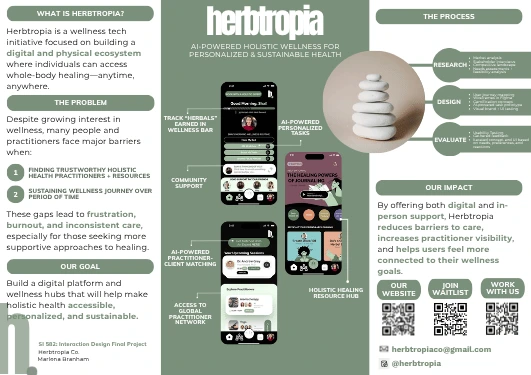
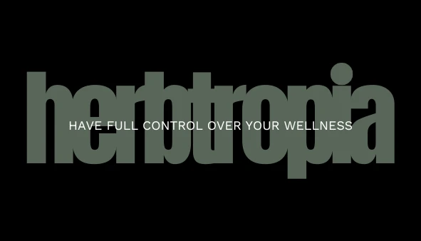
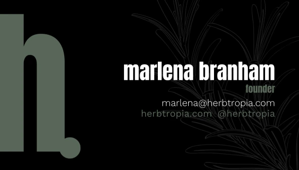

Wellness seekers
People looking for practitioners, events, and educational starting points without navigating disconnected sources.
Herbtropia is a holistic-wellness discovery platform. The work began with a broad belief that finding trustworthy practitioners, events, and education was too fragmented; my job was to validate that problem, decide what belonged in the first product, and build the systems needed to move from idea toward launch.
4 min read · Original project artifacts

Herbtropia Co. is the venture I founded to make holistic-wellness discovery easier to navigate. The platform brings practitioner discovery, wellness events, and educational resources into one experience, with a longer-term vision for more personalized guidance and community connection.
The opportunity had two sides. People exploring wellness needed a clearer way to understand their options and decide where to begin. Practitioners and event organizers needed visibility and a way to present their offerings to people who might benefit from them. I treated those as connected but distinct user needs.
As founder and product strategist, I have led the work from discovery through implementation. My responsibilities span research, product definition, UX, brand development, website construction, practitioner outreach, content, email systems, and operating workflows.
I also had to make the venture understandable to mentors, funders, and potential partners. That meant translating research into pitches, roadmaps, prototypes, and concrete decisions about the first release. The optiMize Summer Fellowship in 2025 provided a focused period for refining the directory model, acquisition strategy, submission flows, and launch plan.
Wellness discovery can happen through scattered social posts, referrals, separate event pages, and individual practitioner websites. A new platform would only be useful if it reduced that fragmentation and gave people enough context to choose a next step.
The central product challenge was scope. A directory, events platform, education hub, community space, and personalized matching system could each become a substantial product. I needed to decide which combination would create an understandable first experience and which ideas belonged in later phases.
People looking for practitioners, events, and educational starting points without navigating disconnected sources.
Providers who needed a clear way to submit information and reach a relevant audience.
Stakeholders who needed to understand the opportunity, research, scope, and path toward launch.
I conducted and synthesized more than 150 conversations with users, practitioners, and other stakeholders. The research explored barriers around finding information, judging relevance, practitioner visibility, education, and access.
I used those conversations to refine the customer segments and requirements. Research was not a one-time validation step: it informed what information a listing needed, what people were trying to discover, and how the first release should be organized.
I developed problem and solution maps, user flows, and high-fidelity Figma concepts. These artifacts connected the broad venture idea to a sequence of actions a visitor or practitioner could understand.
The initial roadmap prioritized access to listings, events, and education before more complex personalization. This sequencing made the first release easier to explain and allowed the core discovery experience to develop before adding more demanding features.
The platform needed more than a front page. I worked on practitioner and event submission flows, content structures, newsletter processes, and outreach materials. Each workflow connected information collected from one person with an experience delivered to someone else.
I approached these as repeatable systems. Reusable forms, listing structures, and communication patterns reduce the amount of manual reinvention needed when a new practitioner or event joins the platform.
Alongside the product work, I refined the business model, practitioner acquisition approach, search visibility, newsletter growth, and potential monetization options. Pitch materials and implementation plans helped me explain how these pieces supported the wider venture.
The work required frequent movement between strategy and execution. A decision about the target audience could change the messaging; a submission-flow decision could change operational effort; and the available resources affected which features could responsibly fit into the next release.
The product decisions below reflect the recurring needs documented in my research and venture materials.
| What mattered | The response | Why it mattered |
|---|---|---|
| Discovery was spread across disconnected channels. | Bring listings, events, and education into a shared discovery structure. | Give visitors a clearer starting point. |
| Practitioner visibility and seeker discovery were different needs. | Create a provider submission path alongside the visitor experience. | Support the supply of information as well as its consumption. |
| The long-term vision exceeded a practical first release. | Use a phased roadmap and prioritize the core discovery journey. | Keep development and launch planning focused. |
| New content and providers would create recurring operational work. | Standardize submission fields and communication workflows. | Make the platform easier to maintain as participation grows. |
The website, expo poster, and brand applications show how the venture moved from a research-backed concept into a public-facing identity.



I secured $15,000 in funding to advance development and completed 150+ user and stakeholder interviews. Those are concrete venture milestones that supported product definition and launch preparation.
The work produced the foundation of a digital platform, practitioner and event submission workflows, research-informed product requirements, pitch materials, and a phased roadmap. The website image in this portfolio shows the later public homepage; the research and roadmap narrative explains the decisions that led to the platform’s foundation.
Herbtropia remains an evolving founder-led venture. The materials establish research, funding, development, and launch preparation; they do not yet provide a verified revenue or retention result to attribute to the platform.
Founding Herbtropia taught me to treat product decisions and operating decisions as one connected problem. A useful feature still needs information, people, and processes behind it. The work becomes stronger when those dependencies are visible early.
This is the clearest example of how I work through ambiguity: listen, organize what I learn, choose a manageable next step, and carry it into a working experience. I would bring that same approach to a product, program, or strategy team.
{kind=link}
{kind=link}
{kind=link}